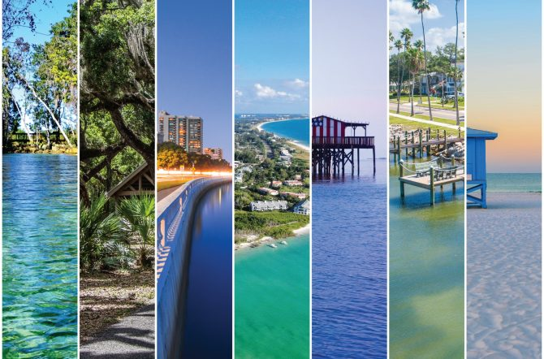
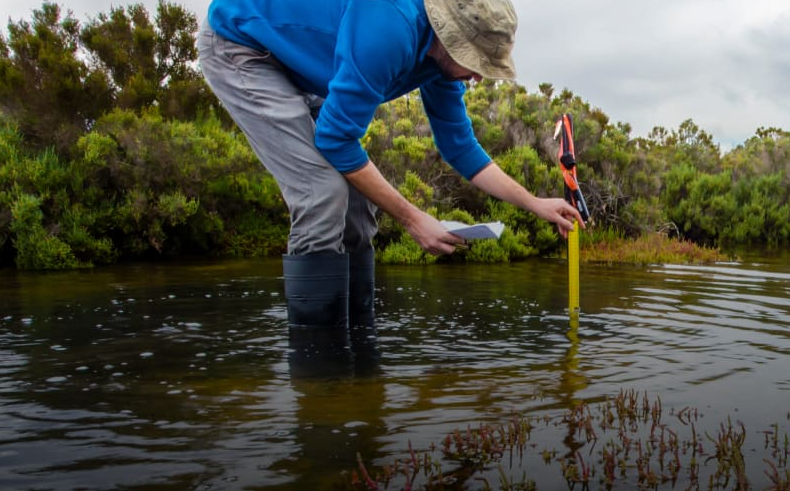
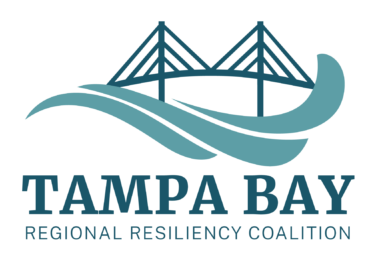

The TBRRC focuses on improving resilience to climate impacts such as rising sea levels, flooding, and extreme weather. This coalition helps communities come together and implement strategies to protect the Tampa Bay.
Two main strategies have been proposed: natural barriers (living shorelines) and sea walls.
Learn more at https://tbrpc.org/about/services/resiliency-planning/coalition/.

